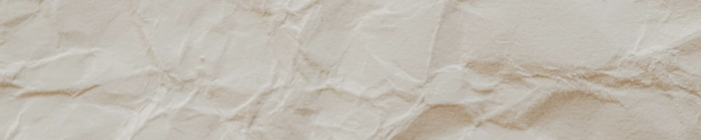
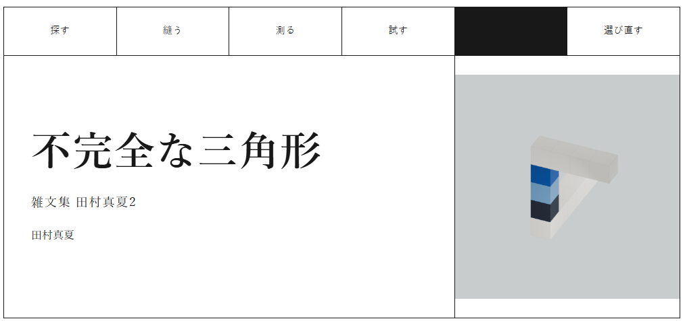
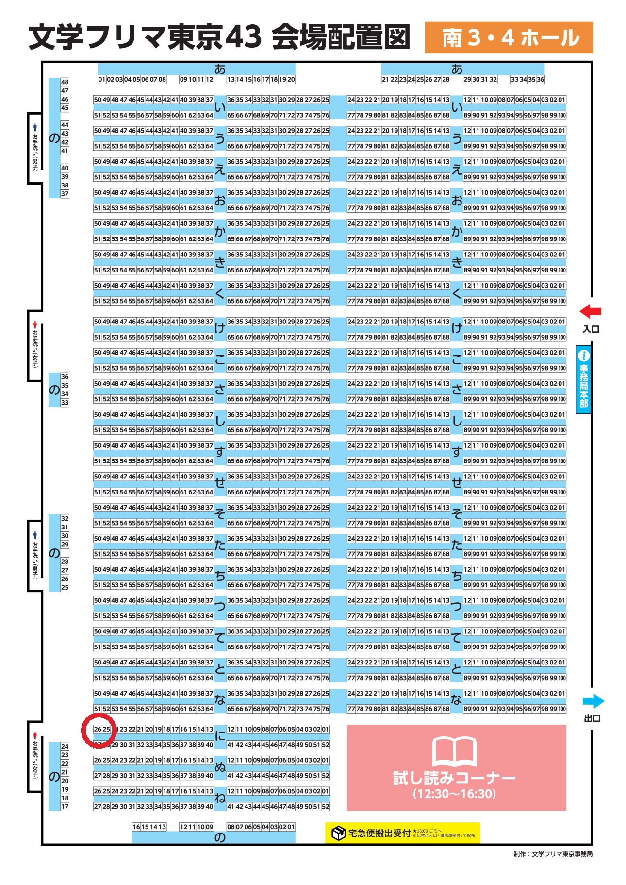
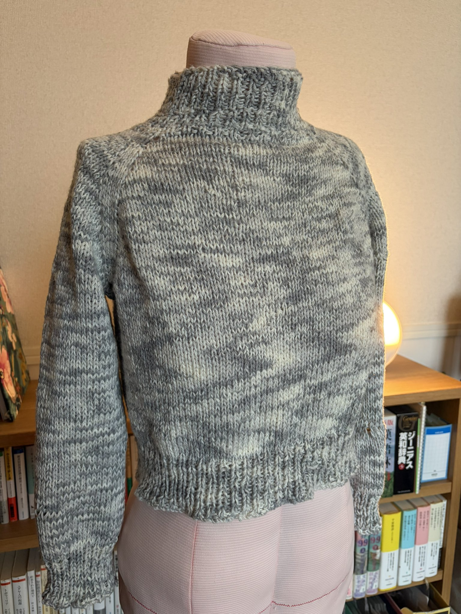

2026年9月の月報です。
9月1日は、物書き「田村真夏」としてデビューした日でした。二年。あっという間でした。 はじめは「まあ、ちょっと本を出せたらうれしいかな」と思いながら始めた物書き。今はすっかり「わたしは物を書く人間なんだ」と思って生きるようになりました。わはは。
このWebサイトも、一周年です。阿部寛のホームページを模倣するところから始まって、未熟ながらも、なかなか気に入るものが作れるようになってきました。
二年を俯瞰してみると、何事も計画通りにはいかなかったな、と思います。自分が「やれる」と思っていたことは思っていたよりもできなかったし、到底できないと思っていたことはできるようになっていた。
そうそう、到底できないと思っていたことといえば、SNS運用ですかね。自分の日記をただ公開するような使い方しかしてこなくて、積極的にほかの人に見てもらう使い方はしてきませんでした。Instagram、頑張ってます。よかったらご覧になってみてください。@tamuramanatsu、フォローしていただけるとめちゃくちゃ嬉しいです。
Instagramでこのリールを見る
うまく計画にのせてやりきろうとしていることも、あります。先日公開した、新刊『不完全な三角形－－雑文集田村真夏２』の特設ページづくりです。

この本は、11/8に開かれるイベント「文学フリマ東京43」に出すことを目標に作っています。すでに原稿は印刷所に入稿しており、仕上がるのを待っているところです。
最近の文学フリマ東京は大盛況で、ふらっと来てふらっと出会うような場所ではなくなっています。イベントより先に『不完全な三角形』を、「田村真夏」を知っていただく必要がある。だから、特設ページを先に作って公開しようと考えました。
新刊『不完全な三角形－－雑文集田村真夏２』は、今のわたしの生きざまを書いた本です。縫い物もWebサイトもCGも本も、全部自分の手で「作る」。それがこの本のテーマです。
特設ページを作るにあたっても、今のわたしが「作る」ものを詰め込みました。このページのデザイン、本、回る三角形、全部わたしが作ったものです。この特設ページを見て新刊にわくわくしてくださったら嬉しいし、本をお手に取っていただいたあとも見てもらいたいなあと思うような、そんなページを、今のわたしにできる最大の力で作ってみました。
特設ページですが、公開して終わり、というわけではなくて、まだ情報を追加する準備をしています。そのときにはまたお知らせしますね。
そして、会場である文学フリマ東京43の詳細も発表されました。詳細→文学フリマ東京43の開催案内（公式）
わたしのブースは 【南3・4ホール に-26】です。

当日は、友人とわたしの二人体制になる予定です。わたしが外出している可能性もあるので「行こうかな？」と思っている方はぜひお気軽にコンタクトをいただけると嬉しいです。お待ちしております。
月報というか、お知らせになっちゃったね。でも、この一カ月って、本当にこの作業ばっかりしていて……！ 走り抜けているうちに終わっていた、という感じでした。
そのほかにやったことといえば、

こんなところでしょうか。ずらりずらりと箇条書きで書いてしまいましたが、それくらい本当に仕事に身を割いていて（先月もこんなことを言っていたような気がする）、あとはおまけ、という感じでしょうか。楽しかった。
またお伝えできることもあるかと思いますし、鋭意制作中のものもたくさんあります。進捗はInstagramでお知らせしていることも多いです。重ねてのお願いになりますが、ぜひそちらもご覧ください。
それじゃあ、またね！